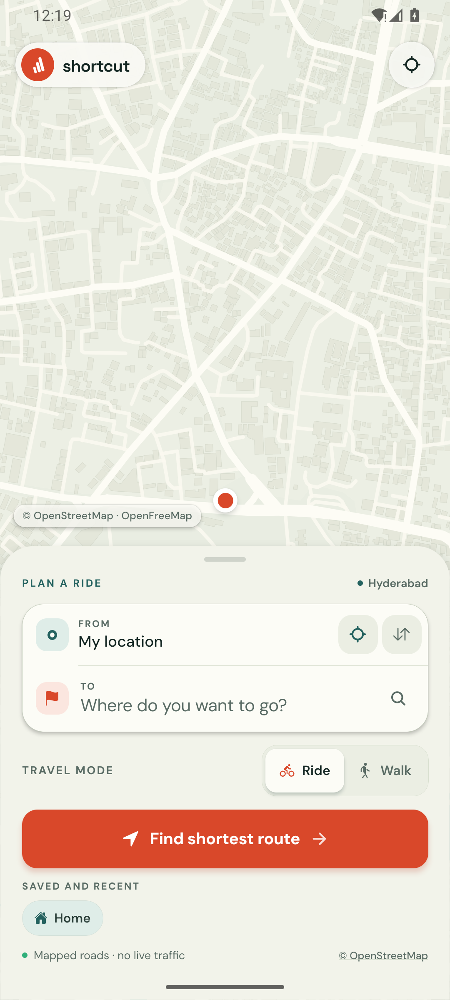
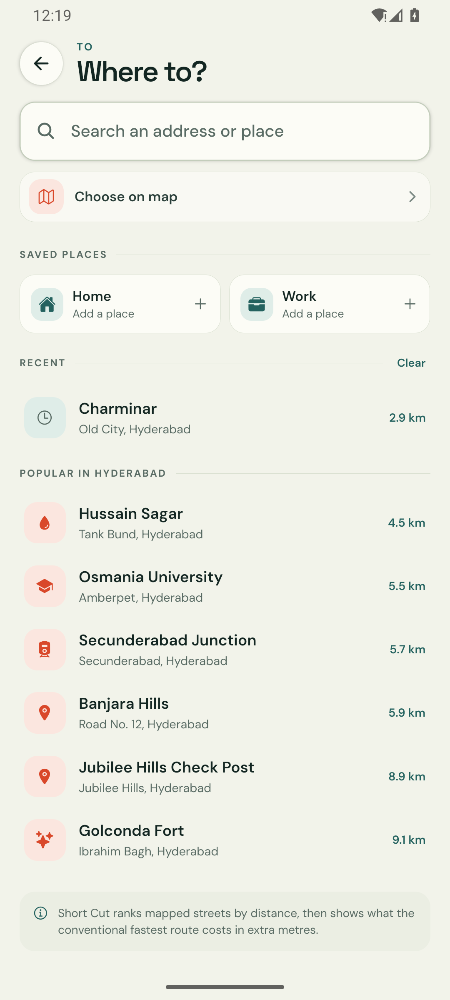
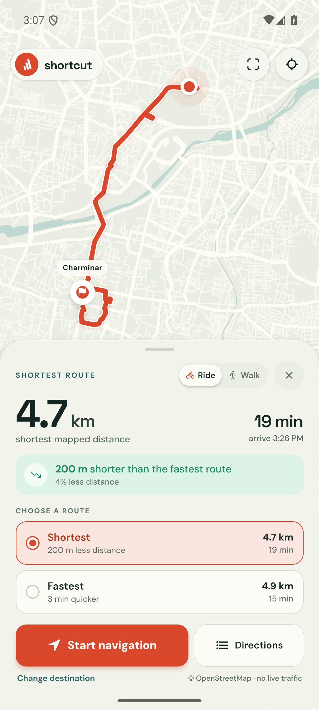

Distance-first navigation
Take the
shorter street.
Short Cut plans your ride or walk along the least distance through streets that are actually open to you — then shows what the conventional fastest route costs in extra metres.

Koti → Jubilee Hills
1.1 km less
than the fastest route
- Platform
- Android 7.0+
- Download
- 41.0 MB APK
- Streets
- OpenStreetMap
- Account
- Not required
Fastest and shortest are rarely the same line.
A road that carries traffic quickly is not always the road that covers less ground. Short Cut ranks by distance and keeps the fastest option next to it, so the trade-off is visible before you set off.
- Shortest, ranked by distance
- Fastest, ranked by time
Koti → Jubilee Hills Check Post
1.1 km less ground, about 5 minutes more on the road.
Example trip through Hyderabad. Real routes follow mapped access, one-way tags and the streets that exist for your mode.
What the build actually does.
Short Cut is a free pilot for Hyderabad: a rider's tool that measures the map honestly instead of optimising for the clock alone.
-
Distance first, by design
Routes are ranked by metres over streets that permit your mode of travel. One-way tags and access restrictions are read from the map, not assumed.
-
Guidance that keeps up
Live GPS tracking, off-route rerouting and spoken prompts keep the ride moving. A preview drive runs the whole route before you leave the house.
-
Opens the links you get sent
Someone shares a pin on WhatsApp and it arrives as a Google Maps link. Short Cut answers
geo:andgoogle.navigation:links, so the route opens where you want it.
Three screens, no clutter.
A planner, a search field and a route card. Everything else is the map you are standing on.


Install it in a minute.
There is no store listing and no sign-up. The file below is an early sideload test build, signed with this project's debug key and served straight from the GitHub releases. It is not a Play Store release.
-
Download the APK
Tap the button on the right. Your browser starts the download immediately.
-
Open it and allow the install
Android will ask to allow installs from your browser or file manager. That is the normal prompt for a sideloaded build.
-
Allow location and go
Location while using the app is enough. Keep a connection on: map tiles, search and routing are live.
Questions before you install.
Anything else lives in the repository.
Will this run on my phone?
If your phone was made in the last eight years, use the arm64 build. It needs Android 7.0 or newer. On a phone that reports “App not installed”, try the 32-bit build.
Why does Android warn me about the file?
This is an early sideload test build signed with the project's debug key, not a Play Store release key, so Android asks you to confirm installs from your browser. That prompt is expected for any app installed outside the store. The build is not Play Store–ready and receives no store updates — new versions are published on this page.
What does it do with my location?
Location is used on your phone to set the start point, show where you are and follow the route during navigation. Search text and coordinates are sent to the public map, search and routing services needed to answer a request. There is no account, no analytics and no location history uploaded. Every service is listed on the privacy and limitations page.
Does it work offline?
No. Map tiles, place search and routing all come from live services. The app keeps the route it already calculated, but a new route needs a connection.
Where do the routes come from?
Valhalla calculates the distance-first route, with an OpenStreetMap Overpass fallback if the routing service is unavailable. Public endpoints are best effort, so a failed request shows a retry message rather than a wrong line.
Is it on the Play Store?
Not yet. This release is distributed as an APK from GitHub, which is also the only place to get updates for now.